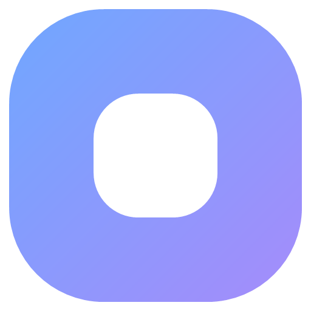
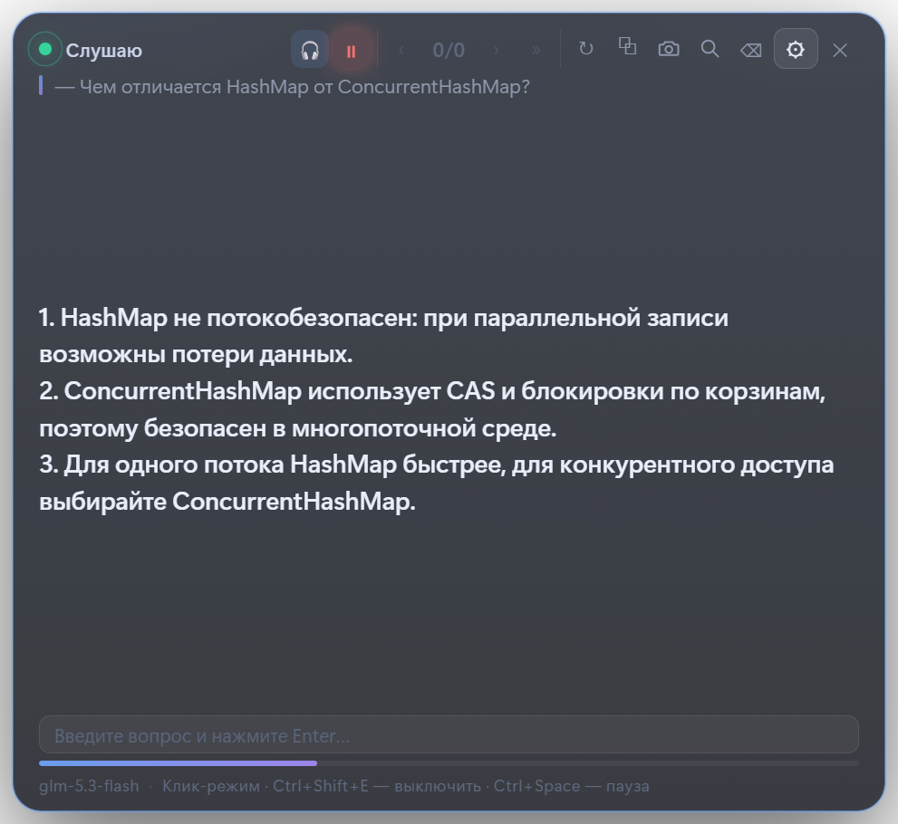
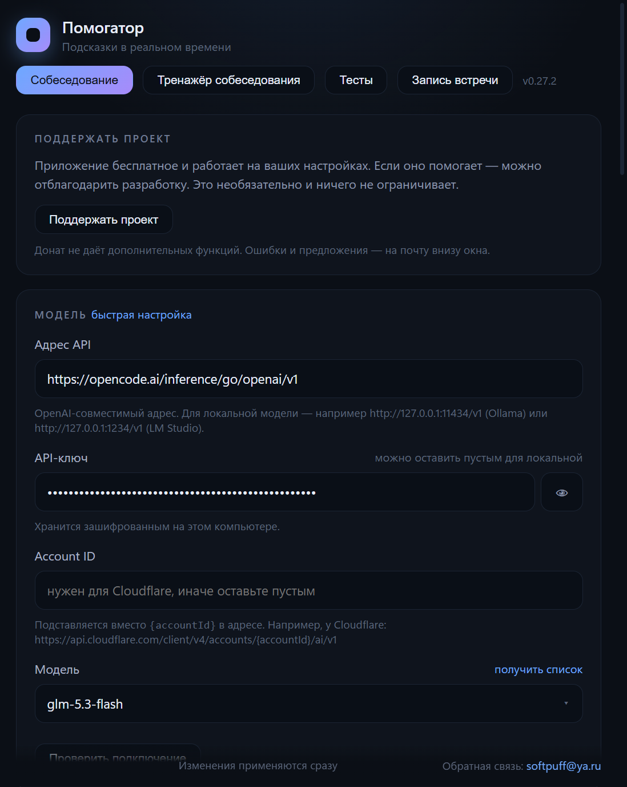

🎧
Распознавание речи
Микрофон или звук системы. Свой API Whisper или локальный whisper.cpp с моделями base, small, medium и large — без обязательного облака.

ПомогаторПомогатор слушает вопрос, распознаёт речь и показывает короткий ответ в оверлее. Оверлей не попадает в скриншоты и демонстрацию экрана.

Один оверлей вместо десяти вкладок. Настройка — за пару минут.
Микрофон или звук системы. Свой API Whisper или локальный whisper.cpp с моделями base, small, medium и large — без обязательного облака.
Модель отвечает от первого лица, тремя пунктами. Ответ появляется потоком и сохраняется в историю.
Выделите код на любом мониторе: приложение вырежет область и попросит модель решить задачу или сделать ревью.
Расшифровка, краткая выжимка и список задач. Всё хранится локально в папке приложения.
Вопросы по Java, QA, Python, SQL, Frontend, Mobile и DevOps. По 100 вопросов в каждом банке.
Нет аккаунта, телеметрии и облака. Ключи шифруются на компьютере, данные уходят только выбранному провайдеру.
Установщик создаст ярлык. Portable-версия запускается одним файлом.
OpenCode Go, Cloudflare, Groq, DeepSeek или локальная Ollama. Мастер подставит адрес и модель — останется вставить ключ.
Оверлей появится на экране. Вопросы распознаются сами, ответы печатаются в реальном времени.

Приложение бесплатное, но модель и распознавание работают на стороне провайдера. Выберите любой сервис — ключ вставляется в быстрой настройке.
Модели: glm-5.3-flash, deepseek-v4.1-flash, qwen3.8-flash.
Модель для ответов: llama-3.3-70b. Распознавание: whisper-large-v3-turbo.
Быстрый вариант для собеседований: gpt-oss-20b и Whisper.
Модели: deepseek-chat и deepseek-reasoner.
ollama pull qwen2.5:7b.Работает без интернета и без оплаты за токены.
Ключи хранятся только на вашем компьютере в зашифрованном виде. Приложение не отправляет их никуда, кроме выбранного вами провайдера.
Коротко о том, что обычно спрашивают перед первым запуском.
Нет. Приложение работает без входа, без email и без облака. Настройки и ключи хранятся на компьютере.
Нет. Вы подключаете свой API-ключ или локальную модель. Сервер проекта не используется.
Только выбранному провайдеру: аудио — на распознавание, текст — на ответ модели. Никакой телеметрии и скрытых отправок нет.
Файлы не подписаны сертификатом. Нажмите «Подробнее» → «Выполнить в любом случае». Целостность можно проверить по SHA256 из релиза.
Проверьте источник звука в настройках: микрофон или звук системы. Затем нажмите «Проверить распознавание». Если используете свой API, убедитесь, что ключ и модель STT верные.
Откройте настройки → «Проверить подключение». Проверьте адрес API, ключ и название модели. Если провайдер вернул 429 — закончился лимит, попробуйте другую модель или локальную Ollama.
Setup устанавливает приложение и создаёт ярлыки. Portable — один exe, который запускается без установки. Для постоянного использования удобнее Setup.
Приложение проверяет новые версии на GitHub. Portable нужно заменить вручную, установленная версия обновляется сама.
Приложение бесплатное. Платят только провайдеру за токены и распознавание. Для локальной Ollama и whisper.cpp платить не нужно.
Напишите на softpuff@ya.ru. Приложите диагностику из настроек — так быстрее найти причину.
Обе версии бесплатны и работают одинаково. Разница только в установке.
Создаёт ярлыки, ставится в профиль пользователя. Удобнее для повседневного использования.
Скачать SetupОдин exe. Запускается сразу, ничего не устанавливает. Обновление — замена файла вручную.
Скачать PortableФайлы не подписаны сертификатом, поэтому SmartScreen может предупредить. Нажмите «Подробнее» → «Выполнить в любом случае». Целостность можно проверить по SHA256 .
Донат не даёт дополнительных функций и ничего не ограничивает. Если Помогатор помогает — можно отблагодарить разработку.